Apps für Origin
Apps
In Origin 2016 wurden die Origin-Apps eingeführt -- Hilfsmittel,
die Sie ganz einfach zu Ihrer Origin-Installation hinzufügen können, indem
Sie sie in den Origin-Arbeitsbereich ziehen. Diese beständig wachsende
Sammlung von Add-Ons erweitert den ohnehin hohen Leistungsumfang von Origins
Funktionalität der grafischen Darstellung und Analyse.
Da eine App ein alleinstehendes, leicht verteilbares Hilfsmittel ist,
das darauf abzielt, ein bestimmtes Problem zu lösen, kann es schnell entwickelt
und verteilt werden. Ein großer Vorteil ist hierbei, dass es nicht notwendig
ist, auf das Release der neuen Origin-Version zu warten. Zusätzlich kann eine
App von jedem entwickelt werden, der/die über ein grundlegendes Verständnis
zur Programmierung in Origin verfügt. Dadurch wird das Konzept attraktiv,
da Anwender Hilfsmittel für ihr Unternehmen oder andere Anwender erstellen
und verteilen können.
Gegenwärtig können alle Apps kostenlos heruntergeladen werden. Beachten Sie,
dass einige Apps OriginPro erfordern; dies wird in der
Beschreibung der App durch das Symbol gekennzeichnet.
Wo befinden
sich die Apps?
Die Apps werden im Dateiaustausch von OriginLab aufgelistet. Auch wenn
Sie Apps vom Dateiaustausch mit Hilfe Ihres Webbrowsers herunterladen
können, ist es einfacher, Ihre Apps über das App-Center zu erhalten
und zu verwalten.
Mit dem App-Center sind alle Operationen rund um die Apps gebündelt
von einem Ort aus durchzuführen: Durchsuchen und Herunterladen von neuen
und beliebten Apps, Suchen nach Apps, Aktualisieren von bestehenden Apps,
Anfordern einer App oder Senden einer App über die OriginLab-Webseite.
Um das App-Center zu öffnen, klicken Sie auf die Schaltfläche
Apps hinzufügen, die auf allen Registerkarten der Apps-Galerie
angezeigt wird.
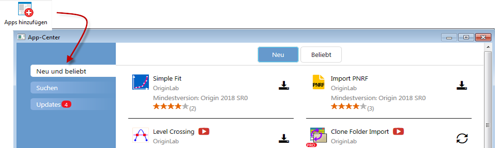
Was das App-Center bietet:
- Die Apps mit dem Symbol Aktuelle Version
 sind installiert und aktualisiert.
sind installiert und aktualisiert.
- Die Apps mit einem anklickbaren Symbol Download und Installation
 sind nicht installiert. Klicken Sie auf dieses Symbol, um die App
zu installieren.
sind nicht installiert. Klicken Sie auf dieses Symbol, um die App
zu installieren.
- Den Apps mit dem Symbol Aktualisierung
 steht ein Update zur Verfügung, das Sie
installieren können. Klicken Sie auf dieses Symbol, um die App zu aktualisieren.
steht ein Update zur Verfügung, das Sie
installieren können. Klicken Sie auf dieses Symbol, um die App zu aktualisieren.
- Die Registerkarte Neu und beliebt zeigt auf einen Blick,
welche Apps verfügbar sind. Apps herunterladen und aktualisieren
- Die Registerkarte Suche dient zum Suchen von Apps nach
Kategorie und Mindestversion. Apps herunterladen und aktualisieren
- Die Registerkarte Updates zeigt das Symbol eines roten
Kreise an, wenn ein Update für eine oder mehrere installierte Apps zur
Verfügung steht. Verbesserungen und Fehlerbehebungen werden für jede App
aufgelistet.
Apps
über die Menüs Analyse und Statistik suchen
Sie können Apps für diese spezifischen Anwendungen durch Klicken auf
Apps suchen... im Hauptmenü von Origin finden:
- Analyse: Anpassen
- Analyse: Peaks und Basislinie
- Statistik
Diese Menübefehle öffnen das App-Center auf der Registerkarte Suche,
um nur die relevanten Apps, die zurzeit in OriginLabs Dateiaustausch verfügbar
sind, zu zeigen. Klicken Sie auf das Symbol Download und Installation
neben einer zu installierenden
App, um die App zu installieren.
- 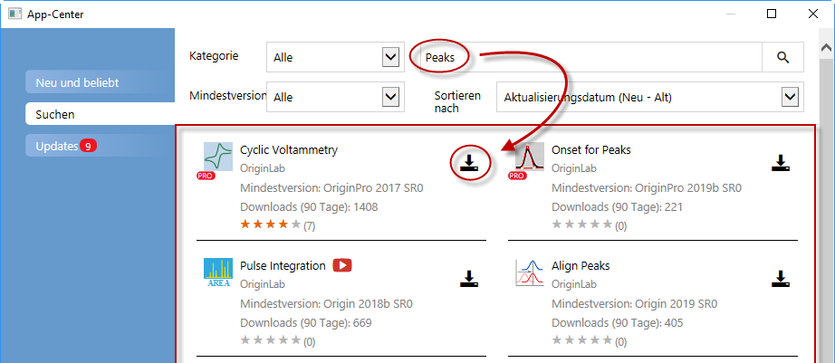
Wo werden
Apps installiert?
Wenn Sie Ihre Apps über die Schaltfläche Download und Installation
im Dialog App-Center
installieren, müssen Sie nichts weiter tun. Die App wird automatisch heruntergeladen
und installiert. Wenn für Apps Updates verfügbar werden, können Sie die
Schaltfläche Aktualisierung verwenden, um eine installierte App zu aktualisieren.
Falls Ihr
Computer keinen Internetzugriff hat ...
Falls Ihr Computer keinen Zugriff auf das Internet hat, müssen Sie einen
Computer finden, der das tut, (er muss kein installiertes Origin haben),
dann die App vom der Webseite Dateiaustausch von OriginLab auf einen USB-Stick herunterladen
und sie zu Ihrem Computer bringen.
- Öffnen Sie auf dem mit dem Internet verbundenen Computer einen
Browser und navigieren Sie zu originlab.com/fileExchange.
- Durchsuchen Sie die Liste der Apps, gehen Sie zur Beschreibung
und Downloadseite der App, klicken Sie dann auf die Schaltfläche Datei
herunterladen und kopieren Sie die Datei auf den USB-Stick.
- Kehren Sie zu Ihrem Computer zurück, auf dem Sie mit Origin arbeiten,
verbinden Sie den USB-Stick und führen Sie Origin aus. Öffnen Sie den
Windows Explorer, navigieren Sie zu dem Verzeichnis Ihres USB-Sticks und
ziehen Sie die Datei der App (sie hat die Dateierweiterung .opx) an eine
leere Stelle im Origin-Arbeitsbereich. Stellen Sie sicher, dass Sie Origin
nicht als Administrator ausführen. Andernfalls wird die Drag&Drop-Operation
fehlschlagen. Die App wird installiert und ist dann in der Apps-Galerie
zu sehen, die auf der rechten Seite des Origin-Arbeitsbereichs angezeigt
wird.
Sollten Sie Fragen haben, klicken Sie auf den Link How to Install
unter der Schaltfläche Datei herunterladen auf der Download-Seite.
- 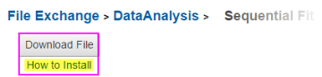
Apps
über das Start-Menü suchen
Sie können auch direkt über das Start-Menü nach Apps suchen und
sie installieren.
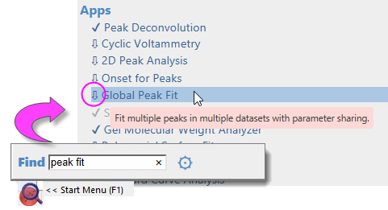
Wie wird
eine App ausgeführt?
- Nach der Installation wird ein App-Symbol in der Apps-Galerie platziert,
die standardmäßig auf der rechten Seite im Origin-Arbeitsbereich angezeigt
wird.
- App-Operationen können fensterspezifisch sein. Wenn die App abgeblendet
(ausgegraut) ist, kann die App nicht im aktiven Fenster ausgeführt werden.
Überprüfen Sie, welcher Fenstertyp erforderlich ist (fahren Sie mit der
Maus über das App-Symbol in der Apps-Galerie).
- Wenn der Origin-Fenstertyp (Arbeitsblatt, Diagramm etc.) für die
App geeignet ist, können Sie die App durch einen Doppelklick auf sie in
der Apps-Galerie starten.
- Wenn Sie es vorziehen, die App über die Schaltfläche in der Symbolleiste
zu starten, öffnen Sie den Dialog Anpassen (Symbolleisten) (Ansicht:
Symbolleisten), klicken Sie auf die Registerkarte Befehle,
suchen Sie nach der Symbolleistenschaltfläche der App und ziehen Sie die
Schaltfläche in den Origin-Arbeitsbereich oder auf eine bestehende Symbolleiste.
Schließen Sie den Dialog.
- Spezifische Nutzungsinformationen sind auf der Beschreibungsseite
für jede App verfügbar.
Wie werden Apps
verwaltet?
Sie können das App-Center in Kombination mit der Apps-Galerie
verwenden, um Ihre Apps zu verwalten:
- Nutzen Sie das App-Center (wie oben beschrieben), um Apps
hinzuzufügen und zu aktualisieren, nach Apps zu suchen, eine App anzufragen
oder eine Meinung über eine App einzusenden.
. Um das App-Center zu starten, klicken Sie auf die Schaltfläche Apps
hinzufügen in der Apps-Galerie.
- 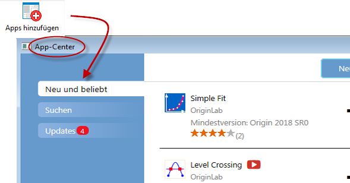
- Organisieren Sie Ihre Apps über das Hinzufügen von Registerkarten
in der Galerie. Klicken Sie mit der rechten Maustaste auf einen leeren
Bereich der Galerie und wählen Sie Neue Registerkarte. Klicken
Sie dann doppelt auf den Standardnamen der Registerkarte und geben Sie
der Registerkarte einen sinnvollen Namen.
- 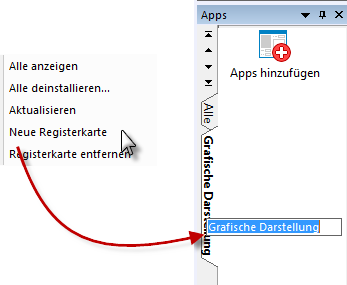
- Zusätzliche Aktionen auf höherer Ebene sind über das Kontextmenü
verfügbar:
- Abstände zwischen App-Symbolen
...
- Alle deinstallieren ...
- Aktualisieren
- Neue Registerkarte
- Konnektor-Apps zeigen
- Apps von anderen Registerkarten
zeigen
- Apps sortieren (Alphabetisch,
Neueste Installation, Zuletzt verwendet).
- Eine Anzahl von app-spezifischen Aktionen können durchgeführt werden,
indem Sie erst mit der rechten Maustaste auf das App-Symbol klicken und
dann eine Option im Kontextmenü auswählen.
- 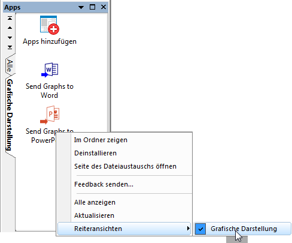
- Im Ordner zeigen: Öffnet
den Anwenderordner \AppData\Local\OriginLab\Apps\, in dem die App installiert
ist.
- Deinstallieren: Deinstalliert
die ausgewählte App.
- Seite des Dateiaustauschs öffnen:
Öffnet die Beschreibungs- und Downloadseite der App im Dateiaustausch
von OriginLab.
- Feedback senden: Öffnet einen
Dialog zum Bewerten der App.
- Alle zeigen (nur vom Benutzer
hinzugefügte Registerkarten): Zeigt die Apps von allen Registerkarten
der Galerie auf der aktiven Registerkarte.
- Aktualisieren: Aktualisiert
die Registerkartenansicht.
- Registerkartenansicht: Fügt
das Häkchen neben der App hinzu oder entfernt es, um zu bestimmen, auf
der welcher/n Registerkarte/n der Galerie die App gezeigt wird.
App-Center
aktualisieren
Neue Apps und Updates von Apps werden kontinuierlich für Anwender von
Origin und OriginPro bereit gestellt. Öffnen Sie Ihr App-Center gelegentlich
(dazu drücken Sie die Taste F10). Falls die rote Schaltfläche Jetzt
herunterladen (Download Now) angezeigt wird, klicken Sie auf die aktuelle
Liste der verfügbaren Apps.

Galerie andocken
Standardmäßig ist die Galerie auf der rechten Seite des Arbeitsbereichs
angedockt.
- 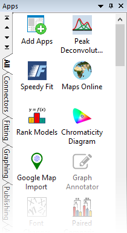
Falls Sie es bevorzugen, können Sie die Galerie oben im Arbeitsbereich
gleich unter den Symbolleisten verankern.
- Ziehen Sie die Titelleiste im Arbeitsbereich nach oben. Ziehen
Sie sie an ihr und lassen Sie sie auf die Andockschaltfläche fallen, die
angezeigt wird (Umriss in Magenta).
- Wenn sie angedockt ist, ziehen Sie den unteren Rand der Galerie,
um die Breite nach Bedarf anzupassen.
- 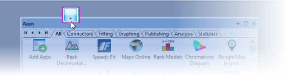
Wird der Anwender über verfügbare Updates benachrichtigt?
Es gibt mehrere Hinweise darauf, wenn für eine App Updates zur Verfügung
stehen.
-
In der oberen rechten Ecke des Symbols Apps hinzufügen in Ihrer
Apps-Galerie wird ein roter Punkt angezeigt (befindet sich rechts
in Ihrem Arbeitsbereich). Der rote Punkt wird außerdem auf einzelnen Apps
angezeigt, um auf ein verfügbares Update hinzuweisen.
- 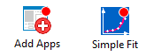
-
Im App-Center wird die App mit dem Symbol "Update"
gekennzeichnet.

-
Die Registerkarte Updates des App-Centers zeigt einen roten
Punkt mit einer Zahl, die darauf hinweist, wie viele Updates für die App
verfügbar sind. Die Registerkarte listet die aktualisierten Apps auf und
lässt Sie die Updates auf einzelne oder alle Apps anwenden.
Um eine App zu aktualisieren:
- Klicken Sie auf das Symbol Update neben der App im App-Center.
- Klicken Sie mit der rechten Maustaste auf das Symbol der App in
der Apps-Galerie und wählen Sie Update herunterladen und installieren.
- Klicken Sie auf die Schaltfläche Alle kompatiblen Apps aktualisieren,
die auf der Registerkarte Updates im App-Center angezeigt wird;
oder klicken Sie auf das Symbol "Update" neben jeder App.
- Klicken Sie mit der rechten Maustaste auf das Symbol Apps hinzufügen
in der App-Galerie und wählen Sie im Kontextmenü Alle aktualisieren.
- 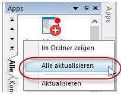
 |
Sie können die Version einer installierten App prüfen, indem Sie mit
der Maus über die App in Ihrer Apps-Galerie fahren. |
Wie
deinstalliere ich eine App?
Das Deinstallieren einer App ist einfach. Klicken Sie mit der rechten
Maustaste auf das Symbol der App in der Apps-Galerie und wählen Sie im
Kontextmenü Deinstallieren.
- 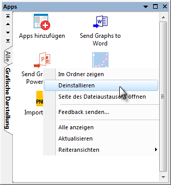
Wie
gebe ich Feedback zu einer App?
OriginLab legt großes Gewicht auf die Rückmeldung von Kunden, um seine
Softwareprodukte zu verbessern. Wir möchten Sie daher darin bestärken,
uns Ihr Feedback zu den Apps zu geben. Dies können Sie tun, indem Sie
mit der rechten Maustaste auf das App-Symbol in der Apps-Galerie klicken
und Feedback senden... auswählen. Dies dauert nur wenige Sekunden!
- 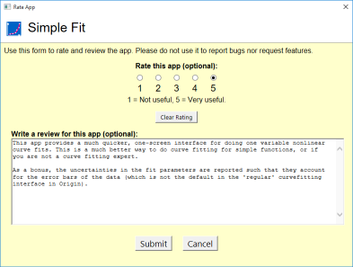
Kann ich
eine App anfragen?
Wie bereits erwähnt, können Apps von jedem, der über Origin-Programmierkenntnisse
verfügt, entwickelt werden. Wenn Sie jedoch nicht programmieren, aber
eine bestimmte Funktion brauchen, die zurzeit nicht in Origin enthalten
ist, haben Sie die Möglichkeit, eine App über die OriginLab-Webseite anzufragen.
OriginLab entwickelt fortwährend und veröffentlicht neue Apps auf der
Seite Dateiaustausch.
- Um eine App anzufragen, öffnen Sie das App-Center und klicken
Sie auf die Schaltfläche App anfragen links unten im Dialog. Es
wird eine Webseite auf www.originlab.com geöffnet.
- Überprüfen Sie, dass in der Auswahlliste Warum kontaktieren
Sie uns die Option Request an App ausgewählt ist.
- Füllen Sie die restlichen erforderlichen Felder aus und klicken
Sie auf die Schaltfläche Anfrage senden unten im Formular.